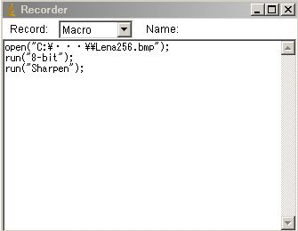
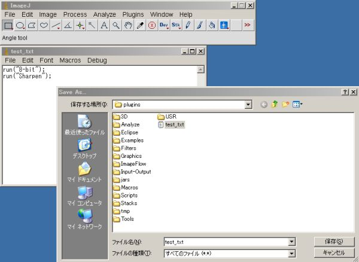
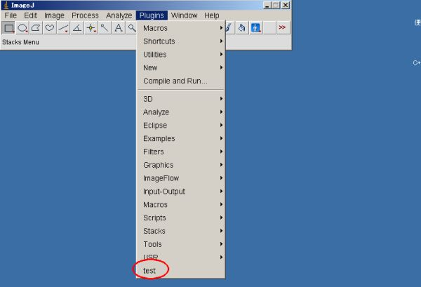

5th November 2017 at 11:32am
マクロの作り方の一例を以下に示します。
- Plugins ⇒ Macros ⇒ Record で、Recorderを起動します。
- Plugins ⇒ New ⇒Macroで、新規マクロを起動します。
- 以下のように処理を実行してみましょう。
画像を開く（File→Open）
⇒ グレイスケール化（Image→Type→8-bit）
⇒ シャープネス処理（Process→Sharpen）
Recorderにはこんな感じで表示されているはずです。
 - Recorderの文字列をコピーして、新規マクロに貼りつけます。
- エディタで良く使う機能は、以下の4つ。所望のマクロを作成します。
- Macros ⇒ Run Macro ： 全行実行
- Macros ⇒ Evaluate Line ： 選択行実行
- Macros ⇒ Abort Macro ： 処理中断
- Macros ⇒ Function Finder ： 関数の検索
- このままでも十分使えますが、メニューに登録してみましょう。
- File ⇒ Save で、ImageJフォルダ内のpluginsフォルダにマクロを保存します
- ファイル名に「_（アンダーバー）」を必ず入れてください。
（こうしないとImageJから見えません）

（↑一行目を削除してグレイスケール化 ⇒ シャープネス処理のマクロにしました。ファイル名は、test_.txt） - Help ⇒ Refresh Menu でPluginsに登録されます。

- 画像を開いた状態で、Plugins→testを実行してみてください。